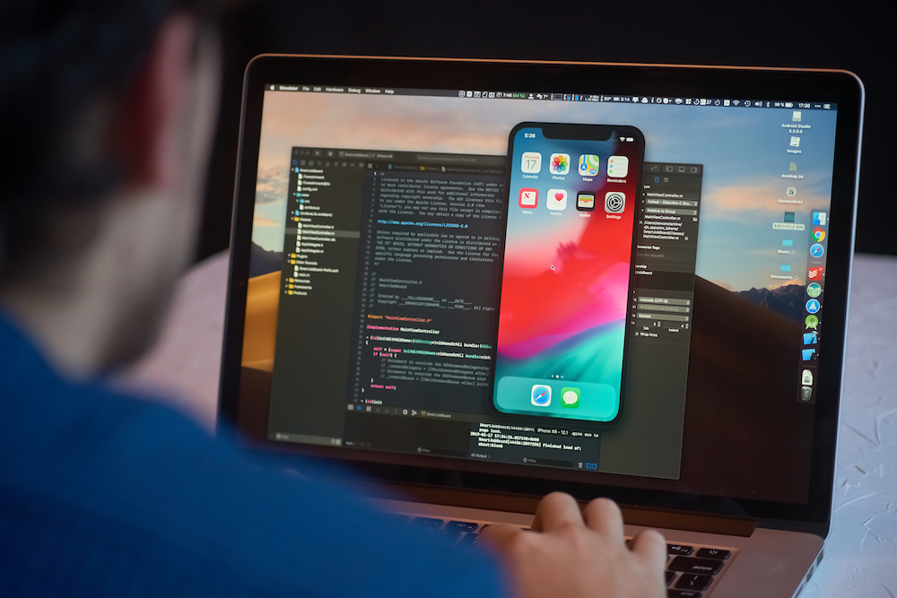

Carreira de programação
A carreira de programação é um mundo repleto de possibilidades, e na hora de escolher qual área estudar, é importante entender como cada uma atua e as tecnologias usuais dentro desse universo. Cada uma contém uma singularidade, mas também, são áreas que se completam e andam sempre juntas dentro de setores, em uma empresa quase sempre haverá um time de desenvolvedores, e esse time composto por várias subáreas, dentre elas desenvolvimento frontend, desenvolvimento backend e desenvolvimento mobile. A seguir conheça mais sobre cada área, e como começar no meio de programação.
Desenvolvedor Front-end
O desenvolvedor front-end é um profissional responsável por criar softwares que trabalham
do lado do usuário, ou seja é o desenvolvedor que cria desde de aplicações webs, a
interfaces de sites. Dentro da área de front-end existe uma tríade base para se desenvolver durante a carreira,
é ela Javascript, HTML e CSS. Essas tecnologias são responsáveis pela a construção de
diversas aplicações e layouts, e permite que o usuário interaja diretamente com o
programa. A partir dela derivas outras tecnologias que vão facilitar cada vez na construção
de projetos, como também abranger os horizontes para as aplicações sejam mais
completas, e torne a experiência do usuário cada vez melhor. Exemplo de frameworks:
- React.js (JavaScript)
- Vue.js (JavaScript)
- Angular (JavaScript
- Bulma (CSS)
- Bootstrap (CSS)
Enfim, o programador front deve se preocupar totalmente com a experiência do usuário,
trabalhar e aperfeiçoar sua lógica de programação para ser capaz de resolver qualquer
problema que esteja em seu meio.
A margem salarial da profissão de programador frontend varia dependendo da posição de
senioridade e também da empresa.
| Senioridade |
Média salarial |
| Júnior |
R$3.064,00 |
| Pleno |
R$6.295,00 |
| Sênior |
R$9.728,00 |
Desenvolvedor Back-end
Ao contrário do desenvolvedor front-end, o back-end vai estar por trás de todo o processo
da aplicação que não esteja relacionado com a interface, é quem têm como objetivo
principal cuidar de processos dentro da aplicação web, a exemplo de uso de banco de
dados para guardar informações do usuário, segurança de dados e o processamento de
dados. O desenvolvedor back-end trabalha com linguagens de programação especificas
para esse meio, a exemplo de java, node.js, python, php entre outras.
Para se sair bem nessa área, é necessário, assim como no front, ter uma boa lógica de
programação, ser capaz de gerenciar problemas ocorrentes nas aplicações e se
especializar em alguma linguagem citada anteriormente. Em resumo, o desenvolvedor
back-end é o responsável pelos bastidores do software.
A margem salarial desse profissional é:
| Senioridade |
Média salarial |
| Júnior |
R$3.665,00 |
| Pleno |
R$6.463,00 |
| Sênior |
R$9.728,00 |
Desenvolvedor Full Stack
Enquanto desenvolvedor front-end é responsável pela parte visual de um software, e o
back-end responsável pelos bastidores da aplicação. Existe o programador full stack que é
esses dois de uma vez, um profissional completo. Um desenvolvedor full stack é o
profissional capaz de construir uma aplicação web completa, tendo conhecimento entre as
duas áreas do desenvolvimento web. E como foi citado anteriormente, esse profissional
precisa seguir os dois caminhos do desenvolvimento web. É algo que leva um pouco mais
de tempo, e esse profissional precisa ter um conhecimento amplo e também ser resiliente,
para estar preparado para as mudanças que vão ocorrer recorrentemente dentro da área.
A margem salarial desse profissional é:
| Senioridade |
Média salarial |
| Júnior |
R$3.144,00 |
| Pleno |
R$5.660,00 |
| Sênior |
R$9.280,00 |
Desenvolvedor Mobile
Caso a área de desenvolvimento web não tenha te interessado, ainda têm a possibilidade
de ser desenvolvedor mobile, ele que é responsável pelo desenvolvimento de aplicativos e
sistemas móveis, como smatphones, tablets, amartwatches e todos os dispositivos
wearables. Esse profissional se depara com algumas linguagens de programação
necessárias para a criação de aplicação mobile, são elas:
- Kotlin
- Swift
- Dart
- Java
- Javascript

Além disso, têm a possibilidade de escolher entre o desenvolvimento android e IOS. E
assim como o front-end têm alguns frameworks que ajudarão no processo de criação da
aplicação, são eles:
- Android
- Flutter
- React Native
- IOS
A média salarial desse profissional é:
| Senioridade |
Média salarial |
| Júnior |
R$3.161,00 |
| Pleno |
R$6.641,00 |
| Sênior |
R$11.239,00 |
Não existe uma graduação específica para se formar como os profissionais citados, porém existe várias graduações que trabalham com a formação do programador, dessa forma, cabe o estudante seguir com autonomia a carreira desejada e que se indentifica.